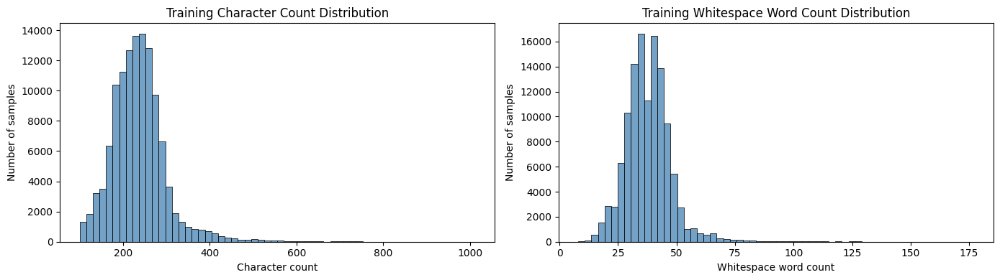
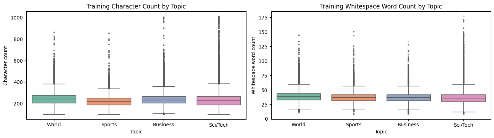
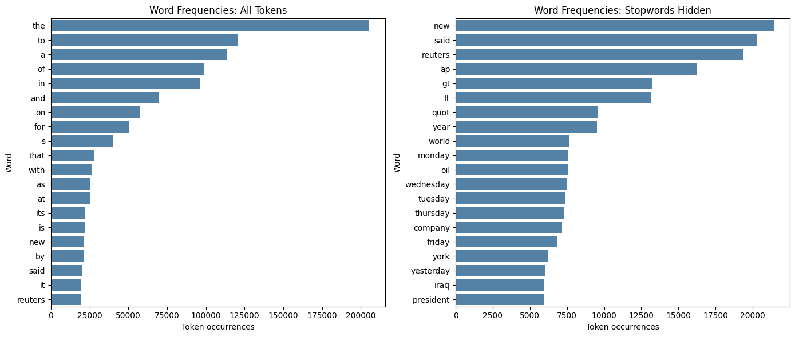
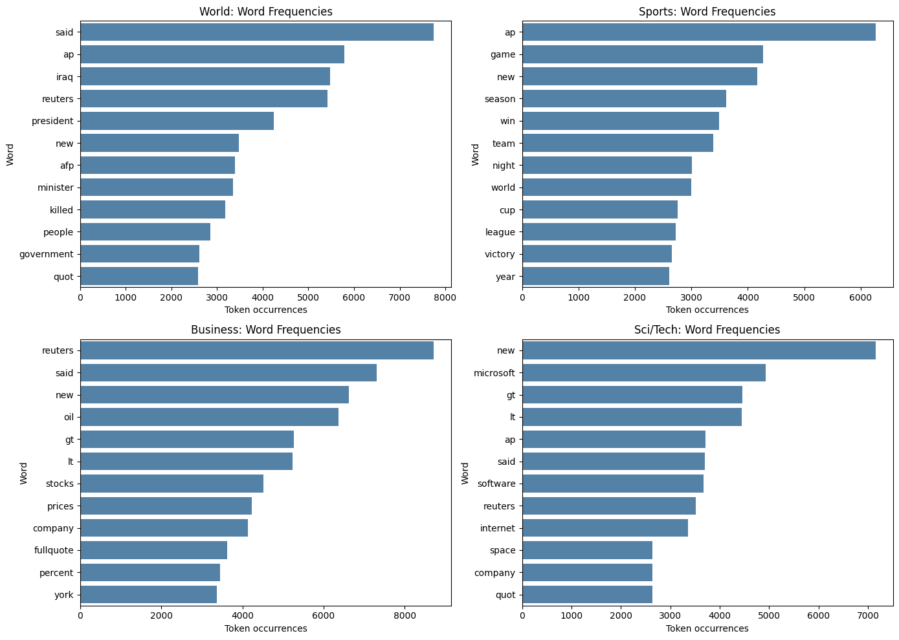
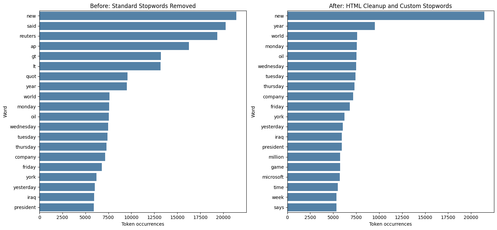
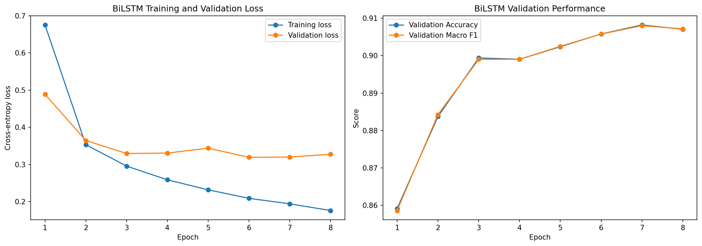
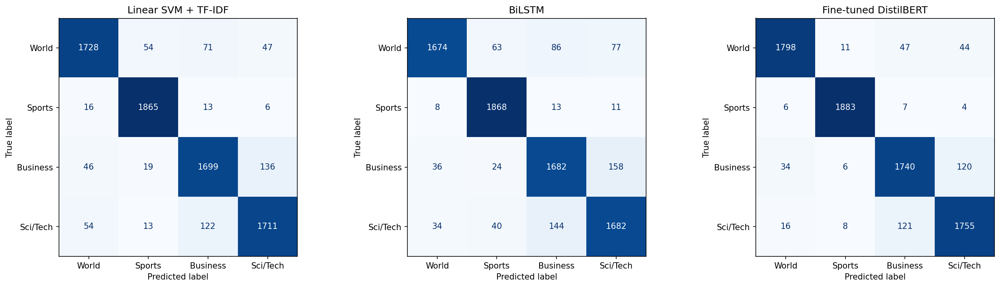

Course information
- Course
- Machine Learning
- Course code
- CO3117
- Semester
- 261, Academic Year 2026–2027
- Instructor
- Dr. Trương Vĩnh Lân
- Group
- 8
Team members
| Name | Student ID | |
|---|---|---|
| Trương Hoàng Phú | 2352924 | phu.truonghoang@hcmut.edu.vn |
| Nguyễn Tấn Khoa | 2352576 | khoa.nguyen2352576@hcmut.edu.vn |
| Nguyễn Đức Thịnh | 2353140 | thinh.nguyenthinh2503@hcmut.edu.vn |
| Lương Thế Kiệt | 2352649 | kiet.luong1360@hcmut.edu.vn |
Problem definition
This project classifies English news text into one of four topics: World, Sports, Business, or Sci/Tech. The input is a news text; the output is one class label.
We compare word-count features, TF-IDF, pretrained embeddings, BiLSTM, and fine-tuned DistilBERT using the same prepared training, validation, and test sets. The main goals are to compare classification performance, inspect errors, and document computational cost.
Validation Macro F1 is used to select configurations and neural checkpoints. Macro F1 gives equal weight to the four classes. Final results include Accuracy, Macro Precision, Macro Recall, Macro F1, and Weighted F1. Test results are used for reporting, not further tuning.
Dataset overview
AG News contains 120,000 official training records and 7,600 official test records in English. Each record has a text input and a numeric label: 0 = World, 1 = Sports, 2 = Business, 3 = Sci/Tech.
The source provides one text field. The notebook later adds source_id, split_group, text_traditional, and text_minimal.
Project pipeline
Read the full workflow before the analysis and model chapters.
Sparse features
Traditional text
BoW / TF-IDF
Unigrams & bigrams
Naive Bayes
Logistic Regression
Linear SVM
Random Forest*
Fixed embeddings
Minimal cleaning
GloVe mean pooling
Frozen DistilBERT
Logistic Regression
Linear SVM
Neural models
Minimal cleaning
Word sequences
Subword tokens
BiLSTM
Fine-tuned DistilBERT
EDA inspects the original dataset. Shared preprocessing and grouped splitting prepare the inputs. The ML chapter covers sparse and fixed-embedding classifiers; the DL chapter covers BiLSTM training and DistilBERT fine-tuning. The same prepared splits are used for comparison.
Exploratory data analysis
Six analysis steps, with methods, recorded results, and interactive views. Detailed analysis uses official training text; test data receives basic quality checks only.
Dataset structure and data quality
Method. Convert both official splits to DataFrames. Inspect sizes and types, then check missing values, blank text, duplicate rows, duplicate text, and raw train–test overlap.
| Split | Records | Columns | Text dtype | Label dtype |
|---|---|---|---|---|
| Train | 120,000 | text, label | object | int64 |
| Test | 7,600 | text, label | object | int64 |
| Check | Train | Test |
|---|---|---|
| Missing text | 0 | 0 |
| Missing labels | 0 | 0 |
| Blank / whitespace-only text | 0 | 0 |
| Duplicate rows: text + label | 0 | 0 |
| Duplicate raw texts | 0 | 0 |
Result. Both splits have two columns and no missing, blank, or exact duplicate inputs. Distinct raw texts shared by the official splits: 0.
Representative records: one per class
Train
| Source row | Text preview | Label | Topic |
|---|---|---|---|
| 492 | Venezuelans Vote Early in Referendum on Chavez Rule (Reuters) Reuters - Venezuelans turned out early\and in large numbers on Sunday to vote in a historic re... | 0 | World |
| 448 | Phelps, Thorpe Advance in 200 Freestyle (AP) AP - Michael Phelps took care of qualifying for the Olympic 200-meter freestyle semifinals Sunday, and then fou... | 1 | Sports |
| 0 | Wall St. Bears Claw Back Into the Black (Reuters) Reuters - Short-sellers, Wall Street's dwindling\band of ultra-cynics, are seeing green again. | 2 | Business |
| 78 | 'Madden,' 'ESPN' Football Score in Different Ways (Reuters) Reuters - Was absenteeism a little high\on Tuesday among the guys at the office? EA Sports would... | 3 | Sci/Tech |
Test
| Source row | Text preview | Label | Topic |
|---|---|---|---|
| 32 | Sister of man who died in Vancouver police custody slams chief (Canadian Press) Canadian Press - VANCOUVER (CP) - The sister of a man who died after a viole... | 0 | World |
| 26 | Giddy Phelps Touches Gold for First Time Michael Phelps won the gold medal in the 400 individual medley and set a world record in a time of 4 minutes 8.26 s... | 1 | Sports |
| 0 | Fears for T N pension after talks Unions representing workers at Turner Newall say they are 'disappointed' after talks with stricken parent firm Federal M... | 2 | Business |
| 1 | The Race is On: Second Private Team Sets Launch Date for Human Spaceflight (SPACE.com) SPACE.com - TORONTO, Canada -- A second\team of rocketeers competing ... | 3 | Sci/Tech |
Text previews preserve the truncation shown in the notebook.
Class distribution
Method. Count each label and divide by the split size. Compare all four topics in the recorded label order.
| Topic | Records | Share |
|---|---|---|
| World | 30,000 | 25% |
| Sports | 30,000 | 25% |
| Business | 30,000 | 25% |
| Sci/Tech | 30,000 | 25% |
| Topic | Records | Share |
|---|---|---|
| World | 1,900 | 25% |
| Sports | 1,900 | 25% |
| Business | 1,900 | 25% |
| Sci/Tech | 1,900 | 25% |
Result. Both official splits are balanced. The training class chart in the notebook is based on 120,000 records.
Text lengths and outliers
Method. Count raw characters, including spaces and punctuation. Count words with whitespace splitting. Inspect summary statistics, topic distributions, the three shortest/longest records per measure, and IQR outliers.
| Statistic | Characters | Whitespace words |
|---|---|---|
| count | 120,000 | 120,000 |
| mean | 236.48 | 37.85 |
| std | 66.51 | 10.09 |
| min | 100 | 8 |
| 25% | 196 | 32 |
| 50% | 232 | 37 |
| 75% | 266 | 43 |
| 95% | 343 | 53 |
| 99% | 464 | 70 |
| max | 1,012 | 177 |
Characters
| Topic | Mean | Median | Minimum | Maximum |
|---|---|---|---|---|
| World | 242.63 | 243 | 100 | 865 |
| Sports | 224.65 | 220 | 100 | 853 |
| Business | 241.41 | 236 | 100 | 1,006 |
| Sci/Tech | 237.22 | 230 | 100 | 1,012 |
Words
| Topic | Mean | Median | Minimum | Maximum |
|---|---|---|---|---|
| World | 38.88 | 39 | 11 | 145 |
| Sports | 37.77 | 37 | 8 | 151 |
| Business | 37.54 | 37 | 8 | 134 |
| Sci/Tech | 37.19 | 36 | 8 | 177 |
Result. The median training text has 232 characters and 37 whitespace words. The 95th percentiles are 343 characters and 53 words.
Length histograms and boxplots




Shortest and longest records
Shortest by characters
| Source row | Topic | Characters | Words | Text preview |
|---|---|---|---|---|
| 55 | Business | 100 | 16 | Hip Hop's Online Shop Celebrity fashion is booming. These webpreneurs are bringing it to main street |
| 591 | Sports | 100 | 18 | US NBA players become the Nightmare Team after epic loss (AFP) AFP - Call them the "Nightmare Team". |
| 921 | Business | 100 | 21 | A Stereo with a Brain You can train Bose's new system to play songs you like. Is it worth the price? |
Longest by characters
| Source row | Topic | Characters | Words | Text preview |
|---|---|---|---|---|
| 95,659 | Sci/Tech | 1,012 | 102 | Yahoo, SBC extend partnership, plan new services Yahoo and SBC Communications will collaborate to extend to cell phones and home entertainment devices some of the online servic... |
| 106,486 | Sci/Tech | 1,009 | 103 | Nokia earmarks millions to build new plant in India Nokia, the world's largest handset maker, is investing up to \$150 million over the next four years to establish a manufactu... |
| 105,792 | Sci/Tech | 1,007 | 101 | IBM to market Sybase Linux database IBMand Sybasehave teamed to add support for Sybase's database software on IBM's eServer OpenPower Linux servers. The two companies said they... |
Shortest by words
| Source row | Topic | Characters | Words | Text preview |
|---|---|---|---|---|
| 26,803 | Business | 159 | 8 | Stocks to Watch ORACLE CORP. <A HREF="http://www.investor.reuters.com/FullQuote.aspx?ticker=ORCL.O target=/stocks/quickinfo/fullquote">ORCL.O</A>: |
| 88,878 | Business | 156 | 8 | Stocks to Watch DELL INC. <A HREF="http://www.investor.reuters.com/FullQuote.aspx?ticker=DELL.O target=/stocks/quickinfo/fullquote">DELL.O</A>: |
| 114,582 | Sci/Tech | 105 | 8 | The PeopleSoft vs. Oracle clash <strong>A <cite>Register</cite> History</strong> |
Longest by words
| Source row | Topic | Characters | Words | Text preview |
|---|---|---|---|---|
| 69,024 | Sci/Tech | 967 | 177 | 2004 US Senate Outlook With all the hoopla over Bush and Kerry, some of you may not have been paying close attention to the other races going on in this loaded US political sea... |
| 19,776 | Sci/Tech | 1,002 | 171 | Making RSS Scale I've been meaning to write about this since I saw a one-page article on the subject of RSS clogging websites' bandwidth in NewScientist back in June. But i... |
| 32,433 | Sci/Tech | 992 | 170 | Kyoto is Dead - Long Live Pragmatism There's troubling news (FT subscription reqd, alternate copy here) coming from Japan, where the Kyoto protocol on Greenhouse Emissions ... |
Word-count outliers
Use IQR = Q3 − Q1 and flag values outside Q1 − 1.5 × IQR to Q3 + 1.5 × IQR. Flagged records remain in the dataset.
| Measure | Value |
|---|---|
| Q1 / Q3 | 32 / 43 |
| IQR | 11 |
| Lower / upper bounds | 15.5 / 59.5 |
| Flagged training records | 3,568 |
Five recorded outlier examples
| Source row | Text preview | Label | Topic | Characters | Words |
|---|---|---|---|---|---|
| 8 | Safety Net (Forbes.com) Forbes.com - After ear... | 2 | Business | 414 | 68 |
| 39 | Microsoft Corp. 2.0: a kinder corporate cultur... | 2 | Business | 416 | 67 |
| 40 | Letters Target the abusers of legal weapons We... | 2 | Business | 391 | 64 |
| 59 | Barrel of Monkeys, 2004 Edition: Notes on Phil... | 2 | Business | 498 | 82 |
| 61 | Not All Jobs Belong To The White Man: Asian Mi... | 2 | Business | 504 | 73 |
Vocabulary, frequencies, and cleaning trial
Method. Lowercase training text and extract alphabetic tokens with optional internal apostrophes. Compare all tokens, filtered tokens, and a separate cleaning trial. Original input text stays unchanged.
| Topic | Token occurrences | Unique word types |
|---|---|---|
| World | 1,162,303 | 30,108 |
| Sports | 1,110,735 | 31,078 |
| Business | 1,156,362 | 27,403 |
| Sci/Tech | 1,134,398 | 32,877 |
| All topics | 4,563,798 | 64,365 |
Token occurrences count repetitions. Word types count distinct tokens. Topic vocabularies overlap, so their type counts do not add up to the overall 64,365.
Word frequencies
All topics · standard stopwords hidden · top 20
Frequency reference table
| Word | Count |
|---|---|
| new | 21,427 |
| said | 20,267 |
| reuters | 19,340 |
| ap | 16,274 |
| gt | 13,231 |
| lt | 13,182 |
| quot | 9,596 |
| year | 9,513 |
| world | 7,609 |
| monday | 7,581 |
| oil | 7,545 |
| wednesday | 7,492 |
| tuesday | 7,413 |
| thursday | 7,298 |
| company | 7,160 |
| friday | 6,799 |
| york | 6,215 |
| yesterday | 6,032 |
| iraq | 5,942 |
| president | 5,927 |
Original frequency plots




HTML and custom-stopword cleaning trial
- Repair and decode HTML entities; remove tags while keeping their text.
- Lowercase and tokenize using the same EDA rule.
- Remove standard English stopwords and
ap, gt, lt, quot, reuters, said. - Keep words of at least two characters in a separate
text_processedfield.
| Token | Before | After |
|---|---|---|
| ap | 16,274 | 0 |
| gt | 13,231 | 0 |
| lt | 13,182 | 0 |
| quot | 9,596 | 0 |
| reuters | 19,340 | 0 |
| said | 20,267 | 0 |
| Measure | Value |
|---|---|
| Selected-token occurrences before / after | 91,890 / 0 |
| Filtered token occurrences before / after | 2,881,252 / 2,755,222 |
| Training records retained | 120,000 |
| Empty processed texts | 0 |
Result. The rules remove the six intended tokens. This does not establish better classification, so the traditional baseline retains stopwords. Validation ablation is reported in the ML chapter.
Cleaning examples and frequency plot
| Source row | Original text preview | Processed text preview |
|---|---|---|
| 40 | Letters Target the abusers of legal weapons We can all share the outrage, expressed by columnist Steve Bailey (''Summer Sizzler, quot; Aug. 11), at the kill... | letters target abusers legal weapons share outrage expressed columnist steve bailey summer sizzler aug killings city's poor neighborhoods there's need share... |
| 41 | Somewhere between gleam and gloom President Bush has been saying that the US economy has ''turned the corner. quot; Democratic presidential candidate Senato... | gleam gloom president bush saying economy turned corner democratic presidential candidate senator john kerry wake month's poor jobs report quipped like turn |
| 161 | Junk faxes to be legalized as quot;opt-out? quot; The Register ran a story on August 6th called 'Phone spam misery looms stateside.' It seems that there's ... | junk faxes legalized opt register ran story august called phone spam misery looms stateside there's legislative nastiness underway washington dc essentially... |


Word clouds
Method. Generate reproducible word clouds from the overall and per-topic processed training counts.
Use the cleaning-trial frequency counts, with max_words=80, an 800 × 400 canvas, and seed 42. Word size reflects token frequency; no model is trained in this step.


Result. The notebook records one overall cloud and one cloud for each topic. Exact counts can be inspected in the frequency explorer above.
Duplicate and suspicious texts
Method. First group identical raw training text by label. Then normalize Unicode with NFKC, ignore case, and replace punctuation/underscores with spaces; inspect repeated non-empty keys and groups with different labels.
| Check | Training groups |
|---|---|
| Exact text, same label | 0 |
| Exact text, different labels | 0 |
| Repeated normalized comparison keys | 218 |
| Normalized groups with different labels | 28 |
Result. Exact duplicates are absent, but normalized matching finds 218 repeated groups, including 28 with different labels. These are review candidates, not confirmed labeling errors.
Three recorded candidate groups
Group 1
| Source row | Topic | Text preview |
|---|---|---|
| 4,671 | Business | Amazon to purchase Chinese on-line retailer Amazon.com Inc. has agreed to buy Joyo.com, China #39;s largest on-line retailer of books, music and videos, for \$75-million (US) t... |
| 5,653 | Sci/Tech | Amazon to purchase Chinese on-line retailer Amazon.com Inc. has agreed to buy Joyo.com, China #39;s largest on-line retailer of books, music and videos, for \$75-million (US) t... |
Group 2
| Source row | Topic | Text preview |
|---|---|---|
| 76,100 | Sci/Tech | AMD Introduces Low-Cost Net Access Device in India (Reuters) Reuters - U.S. chip maker Advanced Micro Devices\Inc. has introduced a low-cost Internet access device\that could ... |
| 76,153 | World | AMD introduces low-cost Net access device in India (Reuters) Reuters - U.S. chip maker Advanced Micro Devices Inc. has introduced a low-cost Internet access device that could c... |
Group 3
| Source row | Topic | Text preview |
|---|---|---|
| 11,443 | Sci/Tech | Comcast Subpoenas Elected Leaders In Montgomery Who Favored Union Two Montgomery County Council members who supported a campaign by employees of Comcast Cable Communications to... |
| 11,464 | Business | Comcast Subpoenas Elected Leaders In Montgomery Who Favored Union Two Montgomery County Council members who supported a campaign by employees of Comcast Cable Communications t... |
No records are removed during EDA. The later split stage uses a separate comparison key with HTML cleanup and short-fragment filtering.
Shared data preparation
Prepare two text versions and one reproducible set of partitions for every model family.
Text preprocessing
The notebook keeps the original text and creates two processed versions. Both repair HTML artifacts and normalize whitespace.
| Setting | Traditional cleaning — text_traditional | Minimal cleaning — text_minimal |
|---|---|---|
| Lowercase | Yes | No |
| Remove punctuation | Yes | No |
| Minimum token length | 2 characters | 1 character |
| Remove stopwords | No | No |
| Lemmatization | No | No |
| Intended use | BoW and TF-IDF classifiers | Pretrained representations and neural models |
Traditional cleaning removes punctuation and one-character fragments. Minimal cleaning keeps case, punctuation, numbers, and short words for later tokenization. GloVe subsequently lowercases and tokenizes its input for its uncased word vectors.
The EDA cleaning trial is separate from the baseline preprocessing. Stopword removal is later tested through P0, P1, and P2 in the traditional ML experiments.
Grouped train / validation / test
The notebook builds comparison keys that ignore HTML artifacts, case, punctuation, spacing, and single-character fragments. It excludes 40 official training records whose keys also occur in test inputs.
The remaining 119,960 records are split by comparison-key group. All records in one group stay in the same subset. Group majority labels support stratification, with ties resolved by the lowest numeric label; individual record labels remain unchanged. The validation ratio is 10% of groups, with seed 42.
- Training
- 107,97384.64% of total
- Validation
- 11,9879.40% of total
- Official test
- 7,6005.96% of total
| Partition | Records | Purpose |
|---|---|---|
| Training | 107,973 | Fit features and train models |
| Validation | 11,987 | Select settings and checkpoints |
| Official test | 7,600 | Report final performance |
This is a modified AG News protocol because test inputs help determine which training records are retained. Test labels and test scores do not guide splitting or model selection. Pairwise checks find no overlap in source IDs, raw text, either processed text version, or comparison keys across the prepared splits.
Machine learning
Follow the two feature routes, then inspect settings, validation results, and controlled experiments.
Sparse text features
- Traditional cleaning
- BoW / TF-IDF: unigrams or bigrams
- Naive Bayes / LR / Linear SVM / RF*
Fixed pretrained features
- Minimal cleaning
- GloVe mean / frozen DistilBERT mean
- Logistic Regression / Linear SVM
Sparse feature extraction
| Representation | N-gram range | Maximum features | Actual features | Sublinear TF |
|---|---|---|---|---|
| Bag-of-Words | (1, 1) | 50,000 | 40,234 | No |
| TF-IDF | (1, 1) | 50,000 | 40,234 | Yes |
| TF-IDF | (1, 2) | 100,000 | 100,000 | Yes |
All three use min_df=2 and max_df=0.95. Vectorizers learn vocabulary and document frequencies from training data only; validation and test data use transform(). Matrices stay sparse and are saved as .npz files; labels are saved as .npy arrays.
Sparse classifiers and validation
| Model | Settings | Features |
|---|---|---|
| Multinomial Naive Bayes | alpha=1.0 baseline | All three sparse representations |
| Logistic Regression | C=1.0, L2, lbfgs, max_iter=1000, tol=1e-4 | All three sparse representations |
| Linear SVM | C=1.0, squared hinge, dual="auto", max_iter=5000, tol=1e-4, seed 42 | All three sparse representations |
| Random Forest | 100 trees, depth 50, leaf minimum 2, max_features="sqrt", n_jobs=-1, seed 42 | BoW only |
The notebook trains 10 model–feature combinations. Validation Macro F1 ranks configurations; Accuracy breaks ties. Linear SVM with unigram–bigram TF-IDF is the best sparse model, with validation Macro F1 of 0.9230.
Linear SVM supports large sparse text matrices. Random Forest uses bounded depth and tree count to limit computation.
| Model | Feature set | Macro F1 | Training time (s) |
|---|---|---|---|
| Linear SVM | tfidf_unigram_bigram | 0.9230 | 6.2632 |
| Logistic Regression | tfidf_unigram_bigram | 0.9205 | 7.6200 |
| Linear SVM | tfidf_unigram | 0.9193 | 5.0112 |
| Logistic Regression | tfidf_unigram | 0.9173 | 5.5470 |
| Multinomial Naive Bayes | tfidf_unigram | 0.9055 | 0.0372 |
| Multinomial Naive Bayes | bow_unigram | 0.9053 | 0.0322 |
| Logistic Regression | bow_unigram | 0.9042 | 12.7794 |
| Multinomial Naive Bayes | tfidf_unigram_bigram | 0.9033 | 0.0652 |
| Linear SVM | bow_unigram | 0.8885 | 22.6319 |
| Random Forest | bow_unigram | 0.8597 | 4.3119 |
Validation experiments
| Experiment | Configuration | Validation Macro F1 |
|---|---|---|
| Stopword ablation | P0: retain stopwords | 0.9230 |
| Stopword ablation | P1: remove six custom stopwords | 0.9188 |
| Stopword ablation | P2: remove standard and custom stopwords | 0.9203 |
| Controlled n-grams | Unigrams, 50,000-feature cap | 0.9193 |
| Controlled n-grams | Unigrams + bigrams, same cap | 0.9200 |
P0 performs best in the stopword comparison. The controlled n-gram comparison fixes the feature cap, although the actual vocabularies differ. A separate sensitivity analysis tests C ∈ {0.1, 1, 10} for SVM/LR and alpha ∈ {0.1, 1, 10} for Naive Bayes. The best tested values are C=1 for SVM/LR and alpha=0.1 for NB. The NB baseline in the original 10-combination comparison uses alpha=1.
Pretrained feature extraction
GloVe
glove-wiki-gigaword-100 provides 100-dimensional word vectors. A document is represented by the mean of recognized token vectors. Unknown tokens are skipped; if no token is recognized, the document receives a zero vector.
Frozen DistilBERT
distilbert-base-uncased produces 768-dimensional document vectors using attention-masked mean pooling. Its encoder weights are frozen; extraction uses evaluation mode and torch.no_grad().
Maximum length is 128 subword tokens, with dynamic batch padding. Extraction batch size is 64 on CUDA and 8 on CPU. A training-only token audit finds a median of 49 subword tokens, with about 0.25% of prepared training articles exceeding 128 tokens.
Dense embeddings are saved as float32 .npy arrays. Integrity checks verify file existence, shape, data type, finite values, and sampled row alignment with the prepared records.
Classification with fixed embeddings
| Model | Settings |
|---|---|
| Logistic Regression | C=1.0, L2, sag, max_iter=1000, tol=1e-3, seed 42 |
| Linear SVM | C=1.0, squared hinge, dual=False, max_iter=5000, tol=1e-3, seed 42 |
Both classifiers are tested on GloVe and frozen DistilBERT, giving four combinations. Dense features use the SAG solver for LR and the primal SVM formulation because sample count exceeds feature dimension. No embedding-specific hyperparameter search is run.
| Representation and classifier | Validation Macro F1 |
|---|---|
| Frozen DistilBERT + Logistic Regression | 0.9157 |
| Frozen DistilBERT + Linear SVM | 0.9142 |
| GloVe + Linear SVM | 0.8921 |
| GloVe + Logistic Regression | 0.8896 |
Frozen DistilBERT performs better than GloVe for both classifiers, but its best result is below TF-IDF + SVM. Classifier fitting and prediction times exclude embedding extraction.
Deep learning
Follow the training flow, then inspect the architecture, settings, and selected checkpoint for each model.
BiLSTM
- Minimal cleaning → training-only vocabulary
- 128 word tokens → embeddings → BiLSTM
- AdamW + cross-entropy → up to 8 epochs
Fine-tuned DistilBERT
- Minimal cleaning → pretrained tokenizer
- 128 subword tokens → encoder + 4-class head
- AdamW → 2 epochs; CUDA mixed precision
BiLSTM
The BiLSTM learns word embeddings and a classifier together. Its vocabulary is built from training text only and contains 43,481 entries, including padding and unknown tokens. Packed sequences keep padding out of the recurrent computation. Final forward/backward hidden states are concatenated and passed through dropout and a four-class linear head.
| Parameter | Setting |
|---|---|
| Vocabulary cap / minimum frequency | 50,000 / 2 |
| Maximum sequence length | 128 word tokens |
| Embedding size / hidden size | 128 / 128 per direction |
| Dropout | 0.30 |
| Batch size | 256 |
| Optimizer / learning rate | AdamW / 0.001 |
| Weight decay | 0.0001 |
| Loss / gradient clip norm | Cross-entropy / 1.0 |
| Epoch limit / early-stopping patience | 8 / 2 |
| Minimum validation F1 improvement | 0.0001 |
Training runs for eight epochs. Epoch 7 has the best validation Macro F1, 0.9080, and its checkpoint is restored. Early stopping is configured but does not trigger. The page includes the recorded learning curves.


BiLSTM epoch-by-epoch results
| Epoch | Training loss | Validation loss | Validation Macro F1 |
|---|---|---|---|
| 1 | 0.6752 | 0.4888 | 0.8586 |
| 2 | 0.3533 | 0.3645 | 0.8842 |
| 3 | 0.2957 | 0.3296 | 0.8990 |
| 4 | 0.2588 | 0.3308 | 0.8990 |
| 5 | 0.2319 | 0.3439 | 0.9025 |
| 6 | 0.2090 | 0.3193 | 0.9058 |
| 7 | 0.1943 | 0.3201 | 0.9080 |
| 8 | 0.1764 | 0.3275 | 0.9072 |
DistilBERT fine-tuning
The notebook fine-tunes distilbert-base-uncased with a four-class classification head. All model parameters are updated. Minimally cleaned text is tokenized with dynamic padding, and CUDA uses mixed precision.
| Parameter | Setting |
|---|---|
| Base model | distilbert-base-uncased |
| Maximum sequence length | 128 subword tokens |
| Training / evaluation batch size | 16 / 32 |
| Optimizer / learning rate | AdamW / 0.00002 |
| Weight decay | 0.01 |
| Gradient clip norm | 1.0 |
| Epochs | 2 |
| Mixed precision | Enabled on CUDA |
| Checkpoint selection | Highest validation Macro F1 |
Validation Macro F1 increases from 0.9434 to 0.9469. Epoch 2 is selected and saved with its tokenizer and label mappings. Test scores are not used to choose the epoch.
| Epoch | Training loss | Validation loss | Validation Macro F1 |
|---|---|---|---|
| 1 | 0.2374 | 0.1846 | 0.9434 |
| 2 | 0.1532 | 0.1889 | 0.9469 |
Results and comparison
Evaluate the selected models on the official test set, compare the best ML and DL approaches, and inspect errors.
Final test results
One validation-selected model is retained from each representation family. Stored classifiers and restored neural checkpoints are evaluated on the unchanged 7,600-record official test set.
| Model | Accuracy | Macro F1 | Fit / train |
|---|---|---|---|
| Fine-tuned DistilBERT | 94.42% | 0.9443 | 680.35 s |
| TF-IDF + Linear SVM | 92.14% | 0.9213 | 6.26 s |
| Frozen DistilBERT + LR | 90.96% | 0.9095 | 75.96 s |
| BiLSTM | 90.87% | 0.9086 | 84.12 s |
| GloVe + Linear SVM | 88.70% | 0.8867 | 5.46 s |
Timing boundaries differ: sparse/frozen-embedding rows measure classifier fitting only; BiLSTM measures model training; DistilBERT measures fine-tuning. Feature extraction is excluded from classifier times. These measurements describe the recorded local runs, rather than a controlled end-to-end speed benchmark.
Fine-tuned DistilBERT has the best test result. TF-IDF + SVM is the strongest traditional model. Frozen DistilBERT and BiLSTM have similar test Macro F1 values.
Best ML vs. best DL
TF-IDF +
Linear SVM
0.9213Test Macro F1
Fine-tuned
DistilBERT
0.9443Test Macro F1
| Metric | Best ML: TF-IDF + Linear SVM | Best DL: fine-tuned DistilBERT |
|---|---|---|
| Validation Macro F1 | 0.9230 | 0.9469 |
| Test Accuracy | 92.14% | 94.42% |
| Test Macro F1 | 0.9213 | 0.9443 |
| Recorded fit / train time | 6.26 s, classifier only | 680.35 s, fine-tuning |
| Test inference time | 0.0145 s, precomputed features | 4.8233 s, tokenization + forward passes |
Fine-tuned DistilBERT improves test Macro F1 by 0.0230 and Accuracy by 2.28 percentage points over TF-IDF + SVM. It requires pretrained weights and neural fine-tuning. The SVM uses sparse word/phrase features and a simpler classifier.
These are different timing scopes, so the recorded times should not be converted into an end-to-end speedup claim. The result supports a performance–computation trade-off within this experiment; it does not establish a universal winner for other datasets or hardware.
Source and reproducibility
- Repository.
- Notebook.
- Run in Colab.
- Recorded runtime: Python 3.14.2, PyTorch 2.11.0 with CUDA 13.0, NVIDIA GeForce RTX 5050 Laptop GPU.
Error analysis
The notebook compares final predictions from TF-IDF + SVM and fine-tuned DistilBERT. It counts frequent confusion pairs and samples correct predictions, disagreements, and shared errors. This analysis does not change either model.
| True → predicted topic | TF-IDF + SVM | Fine-tuned DistilBERT |
|---|---|---|
| Business → Sci/Tech | 136 | 120 |
| Sci/Tech → Business | 122 | 121 |
These are frequent errors for both models. The counts alone do not establish their cause.
official_test:172, “Ross Stores Profit Plummets 40 Percent”: true label Business; SVM predicts Sci/Tech; DistilBERT predicts Business.official_test:36, “Venezuela Prepares for Chavez Recall Vote”: true label World; both models predict Business.
The page retains the confusion-matrix figure. Example interpretations are descriptive and do not establish label noise or general model behavior.

